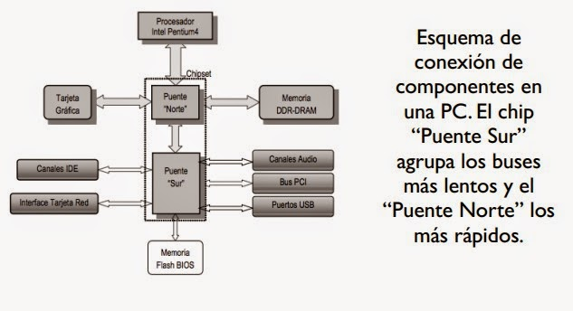
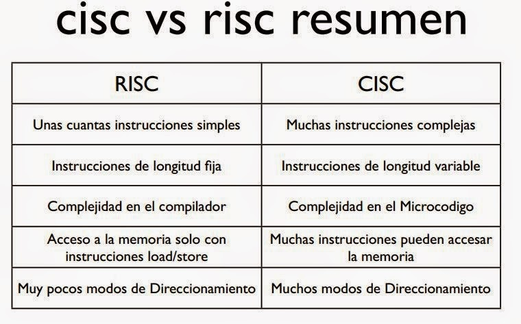

1.1.1 Modelos de arquitectura

- Von Neumann: Propone que las instrucciones y los datos se almacenan en la misma memoria. Utiliza un único bus para transportar datos e instrucciones, lo que puede causar un "cuello de botella" (limitación en la velocidad).
- Harvard: Separa la memoria para datos y para instrucciones, lo que permite mayor eficiencia y velocidad.
- Divide el procesamiento en etapas o segmentos, donde cada parte del hardware realiza una función específica de manera concurrente.
- Involucra múltiples procesadores trabajando en paralelo para ejecutar varias tareas simultáneamente. Mejora el rendimiento en sistemas con alta demanda de procesamiento.
1.1.2 Análisis de los componentes
- Encargado de interpretar y ejecutar instrucciones.
- Almacena temporalmente las instrucciones y datos necesarios para la ejecución.
- Permiten la interacción entre el usuario y la computadora (teclado, pantalla, impresoras, etc.).

1.2.1 Arquitecturas
- Usa un conjunto amplio de instrucciones, muchas de ellas complejas. Ejemplo: Procesadores Intel x86.
- Usa un conjunto reducido de instrucciones simples, optimizadas para ejecutarse más rápido. Ejemplo: ARM (usado en dispositivos móviles).

1.2.1.1 Unidad Central de Procesamiento (CPU)
- Compuesta por:
- Unidad de Control: Dirige el flujo de datos e instrucciones dentro del procesador.
- Unidad Aritmético Lógica (ALU): Realiza cálculos matemáticos y operaciones lógicas.
- Registros: Almacenan datos temporalmente para un acceso rápido.
1.2.1.2 Unidad Aritmético-Lógica (ALU)
- Realiza las siguientes operaciones:
- Aritméticas: Suma, resta, multiplicación, división.
- Lógicas: AND, OR, NOT, XOR.
- Comparaciones: Igual, mayor que, menor que.
1.2.1.3 Registros
- Memoria ultrarrápida dentro del procesador.
- Tipos:
- Registros de propósito general: Almacenan datos temporales.
- Registros de propósito específico: Ejemplo, contador de programa (PC), puntero de pila (SP).

1.2.1.4 Buses
- Sistemas de comunicación que interconectan los componentes.
- Tipos:
- Bus de datos: Transporta datos entre CPU, memoria y dispositivos.
- Bus de direcciones: Identifica la ubicación en la memoria a la que se quiere acceder.
- Bus de control: Coordina las operaciones de los demás buses.
1.2 Memoria
- Jerarquía de memoria: Registros → Caché → Memoria principal (RAM) → Memoria secundaria (Disco duro).
- Memoria virtual: Simulación de una memoria más grande usando espacio en disco.
1.2.2.2 Memoria principal
- RAM (Random Access Memory): Volátil, almacena datos temporales.
- ROM (Read Only Memory): No volátil, contiene instrucciones esenciales (como el BIOS).
1.2.2.3 Memoria caché
- Memoria rápida ubicada cerca del procesador. Funciona como un puente entre la CPU y la memoria principal.
- Tipos:
- L1: Integrada dentro del procesador, muy rápida pero pequeña.
- L2: Más grande que L1, pero más lenta.
- L3: Compartida entre núcleos, aún más grande pero más lenta.
1.2.5 Interrupciones
- Definición: Señales enviadas al procesador para indicar que debe detener su tarea actual y atender un evento específico.
- Tipos:
- Por hardware: Generadas por dispositivos externos (teclados, impresoras).
- Por software: Provocadas por el propio programa para solicitar servicios del sistema operativo.